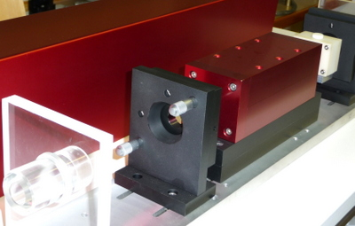
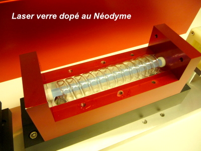
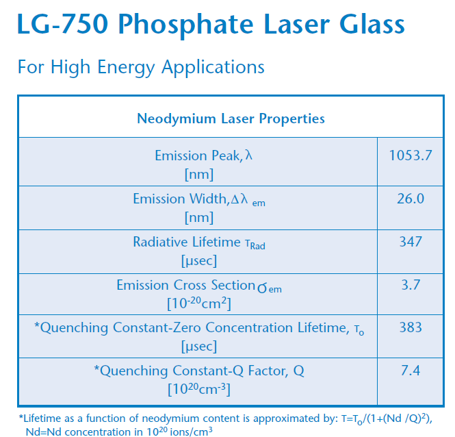
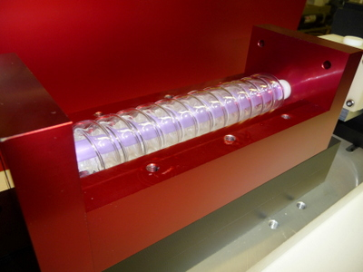
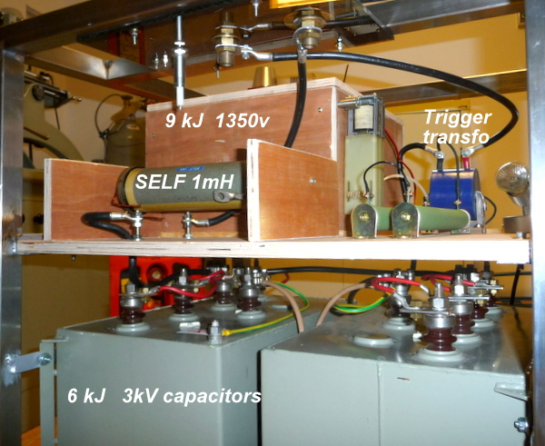

This laser I built in 1971, the glass with the neodymium I received it graciously from the house SCHOTT in Germany to make this laser. The flash tube also from the house GLASS & QUARTZ of Paris following the purchase of the first flash tube at home for my ruby laser.
I have not yet tested this laser for lack of time and now it will not be long!
Energy output 50J Relaxed
output energy 3J Pumping energy 5000J Triggered by saturable absorber




HD movie
This laser I built in 1971 but it has remained in my cabinets for 42 years and it is only now that I am retired that I decided to finish it and make it work.
For that I rebuilt an old capacitor trolley with all the necessary safety and the addition of the 9 kJ electrolytic capacitor bank for ruby laser pumping.

This trolley consists of 2 separate capacitor banks, an electrolytic capacitor bank of 10'000 uF to 1350V for pumping ruby lasers and a 6 kJ 1000 kV to 3kV paper capacitor bank.
The ignition of the flash tube is done by means of a series HV transformer.
A choke limits the discharge current and increases the duration of the pulse to discharge more energy into the flash tube without risking its explosion.
The HT power supply is via an external generator as well as the transformer power supply.